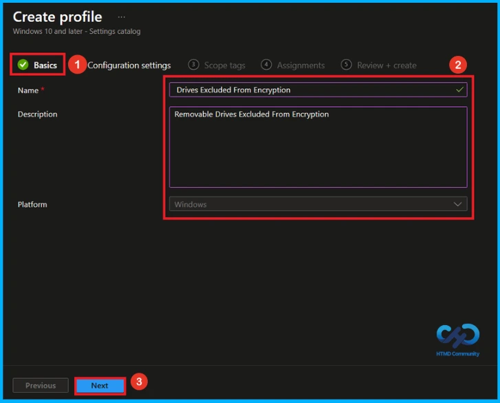
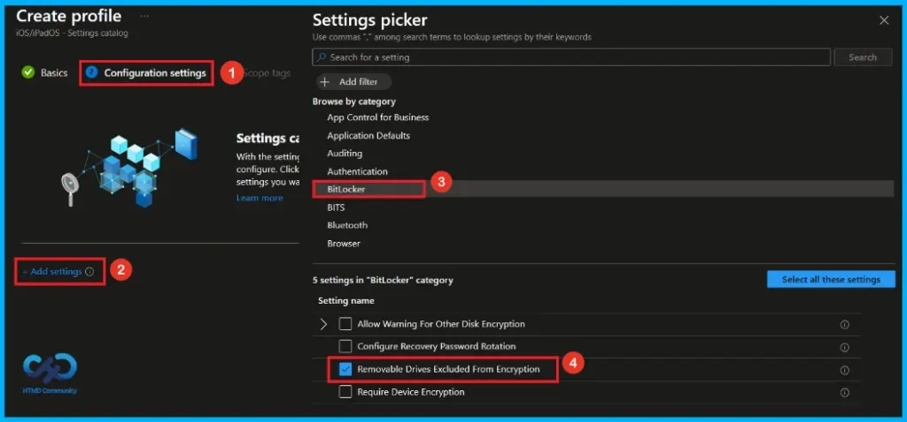
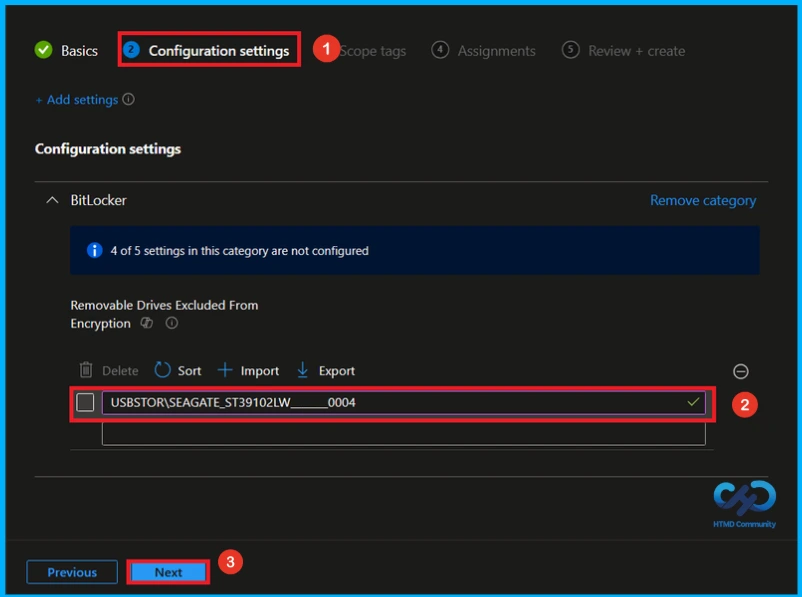
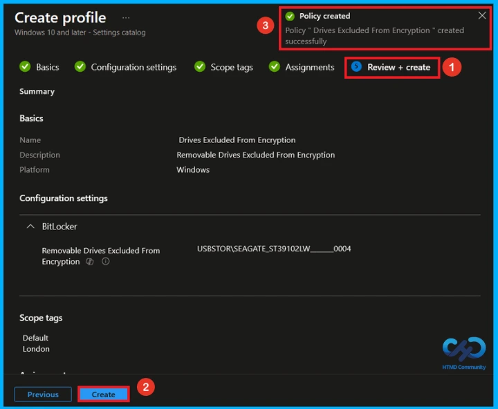
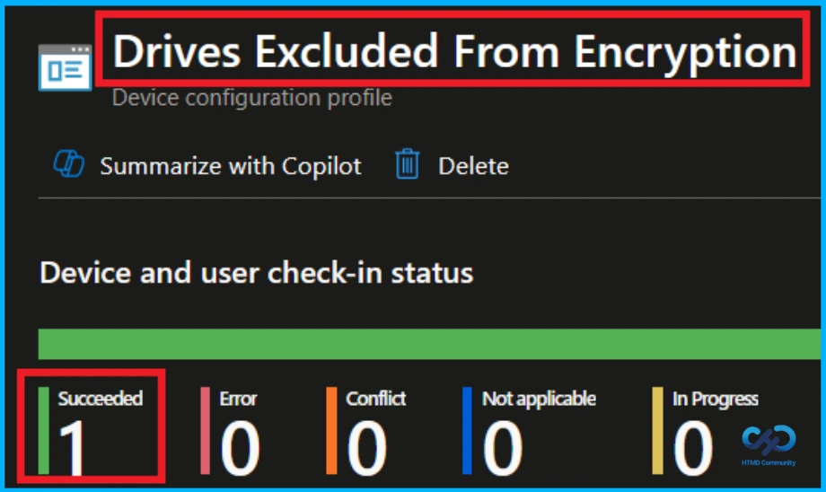
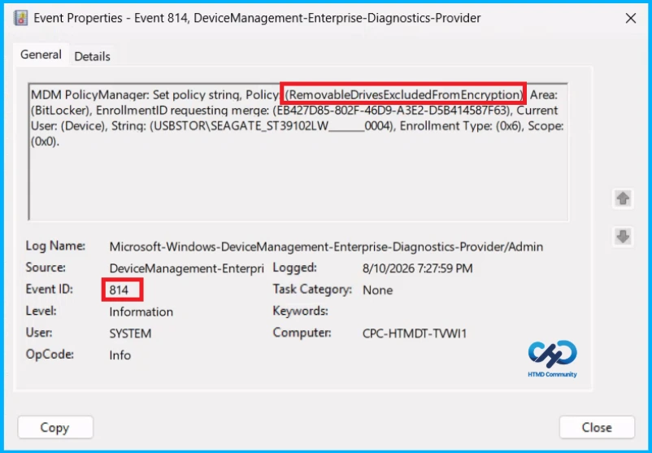
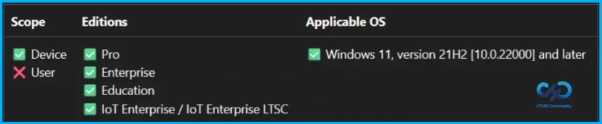
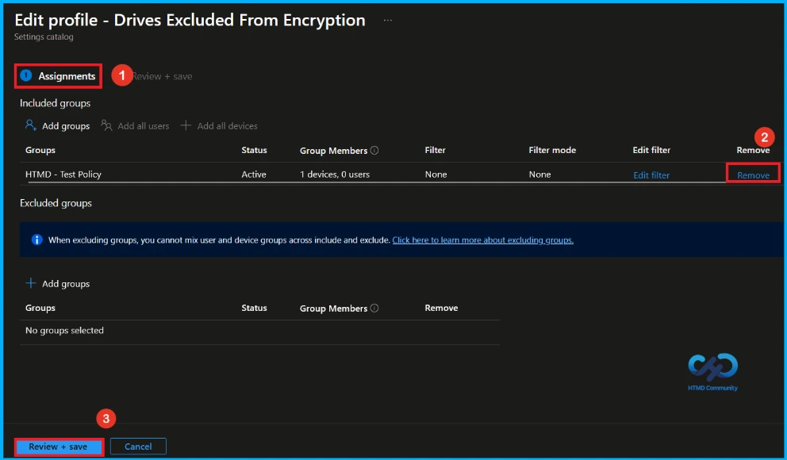
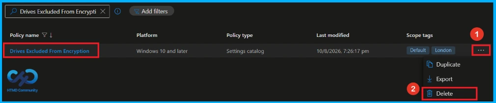

Key Takeaways
- You can exclude USB and removable drives from BitLocker encryption.
- Excluded drives cannot be encrypted manually.
- Users will not be asked to encrypt excluded drives.
- Enter the device Hardware IDs, separated by commas.
Hey, let’s discuss about how Microsoft Intune control BitLocker Encryption for removable USB Drives for better security and business operations. When this setting is enabled, you can exclude removable drives and USB devices from BitLocker encryption. Any excluded device cannot be encrypted, even if you try to encrypt it manually.
Table of Contents
Microsoft Intune Control BitLocker Encryption for Removable USB Drives for Better Security and Business Operations
If Deny write access to removable drives not protected by BitLocker is enabled, users will not be asked to encrypt the excluded drive. The drive will still work normally, with both read and write access. Enter the Hardware IDs of the devices you want to exclude, separated by commas.
How to Create a Policy
To create a new policy, first sign in to the Microsoft Intune admin center. After you sign in, go to the left menu and click Devices. Next, select Configuration, click Create, and then choose New policy to start creating the policy.

Create a Profile
You can create a profile to a Policy by clicking new policy. Now select Windows 10 and later as the platform, then choose settings catalog as the profile type. Once these options are configured, click Create to continue.

Basic Step of Drives Excluded from Encryption Policy
In the Basics tab, enter a name and description for the policy. Here, I entered Drives excluded from encryption as the policy name and added a short description Removable drives excluded from encryption. Then, click Next to continue.

Configure Removable Drives Excluded from Encryption Policy
In Configuration settings tab, click + Add settings to open the settings picker. The Settings Picker will shows different polices. Here, i select the Bitlocker category and then choose the Removable drives excluded from encryption policy.

Removable Drives Excluded from Encryption
After closing the settings picker, you can see the policy on the configuration settings tab. Here, I selected Removable Drives Excluded From Encryption and entered USBSTOR\SEAGATE_ST39102LW_____0004. Then, click Next to continue.

What is Scope Tag
A scope tag in Intune helps to organize and manage Intune resources based on administrative roles. Adding a scope tag is not mandatory. If needed, select the appropriate scope tag by clicking the select scope tags button. Here I selected the London scope tag. Then Click Next to continue.

Add Groups using Assignment Tab
In the Assignments section, you can specify which users or devices should receive the policy. Under Included groups, click Add Groups and select the required group from the list. Here, I selected HTMD – Test Policy to assign the policy to the test group. Once the group is selected, click Next to continue.

Final Step of Drive Excluded from Encryption Policy Creation
In the Review + Create step, review all the configured settings for the policy profile. If any changes are needed, click Previous to update them. Once everything is correct, click Create to complete the setup. A confirmation notification will appear indicating that the policy was created successfully.

Device and User Check-in Status
After creating and assigning the policy. You can verify its deployment status from Intune admin center. Go to the Devices > Configuration in the Intune portal, select Drives Excluded from Encryption policy. Open the policy and review the Device and User Check-in Status to verify whether the status has shown succeeded (1).

Client Side Verification
To confirm that the policy has been successfully applied on a client device. Open Event Viewer and navigate to Applications and Services Logs > Microsoft >Windows >Device Management Enterprise Diagnostic Provider > Admin. From the list of policies, use the Filter Current Log option and search for Intune event 814.
MDM PolicyManager: Set policy strinq, Policy (RemovableDrivesExcludedFromEncryption)Area:
(BitLocker), EnrollmentID requesting merge: (EB427D85-802F-46D9-A3E2-D5B414587F63), Current User: (Device), String: (USBSTOR\SEAGATE_ST39102LW____0004), Enrollment Type: (0x6), Scope:(0x0).

Windows Configuration Service Provider (CSP)
The policy Configuration Service Provider (CSP) is a tool for businesses to manage settings on Windows 10 and 11 devices. It explains the Description Framework Properties.
Description Framework Properties
- Format –
chr(string) - Access Type – Add, Delete, Get, Replace
- Default Value – List (Delimiter:
,)

How to Remove Assigned Group from Drive Excluded from Encryption Policy
To remove an assigned group from a policy, Open the Drive Excluded from Encryption policy from the Configuration tab and click on the Edit button on the Assignment tab. Click on Remove button on this section to remove the policy and click Review + Save after making the change.
Detailed information, you can refer to our previous post – Learn How to Delete or Remove App Assignment from Intune using by Step-by-Step Guide.

How to Delete Drive Excluded from Encryption Policy from Intune
If you want to delete Drive Excluded from Encryption policy for any reason. First, search for the Drive Excluded from Encryption policy in the configuration section. When you find the policy name, click on the 3-dot menu next to it and tap the Delete option.
Detailed information, you can refer to our previous post – Learn How to Delete or Remove App Assignment from Intune using by Step-by-Step Guide.

Need Further Assistance or Have Technical Questions?
Join the LinkedIn Page and Telegram group to get the latest step-by-step guides and news updates. Join our Meetup Page to participate in User group meetings. Also, join the WhatsApp Community and the Whatsapp channel to get the latest news on Microsoft Technologies. We are there on Reddit as well.
Author
Anoop C Nair is Workplace Technology solution architect with 25+ years of experience in global enterprise organizations such as JP Morgan, Capgemini, etc. He is Microsoft Certified Trainer. Microsoft MVP from 2015 onwards for consecutive 11 years! He also conducts Intune and modern workplace tech training for enterprise organizations. He is Blogger, Speaker, and Founder of HTMD Community and HTMD Conference. His focus is on Device Management technologies such as Intune, Windows, Cloud PC. He writes about technologies like Intune, SCCM, Windows, Cloud PC, Windows, Entra, Microsoft Security.